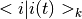
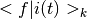

rraman - Analysis of resonance Raman and absorption profiles¶
Resonance Raman excitation profile calculation based on the time-domain picture of resonance Raman. See Myers and Mathies in Biological Applications of Raman Spectroscopy, Vol. 2, pp. 1-58 (John Wiley and Sons, New York, 1987) for details (referred to as Myers in the following). The code is mainly based on Myers’ Fortran 77 code (see Appendix of PhD Thesis of K. M. Spillane, 2011, UC Berkeley for source code).
Here is a short example calculating Myers’ Gedankenmolecule from Myers and Mathies:
import numpy as np
# parameters:
# -----------
# displacements
D = np.array([1.27, 0.3, 0.7, 0.53])
# ground state frequencies
RMg = np.array([1550.0, 1300.0, 1150.0, 1000.0])
# excited state frequencies
RMe = np.array([1550.0, 1300.0, 1150.0, 1000.0])
# electronic zero-zero energy
E0 = 20700.0
# homogeneous linewidth and shape parameter
Gamma = 200.0
halpha = 0
# inhomogeneous linewidth and shape parameter
sig = 400.0
ialpha = 1
# electronic transition dipole length
M = 0.8
# index of refraction of surrounding medium
IOR = 1.0
# time axis parameters for integrations
tmax = 5000
dt = 0.2
# just calculate fundamentals
nquanta = np.identity(len(RMg))
sshift = np.dot(nquanta, RMg)
# calculation part
# ----------------
# create axes
t, wn = getAxes(tmax, dt)
# zero-zero energy and damping
# add here all time domain stuff
TDpart = getZeroZeroEnergy(t, E0) * rr.getHomogeneousDamping(t, Gamma, halpha)
# time dependent overlap integrals
OVLPS = getOverlaps(t, D, RMg, RMe, nquanta)
# calculate cross-sections
sigmaA, sigmaR = getCrossSections(wn, dt, TDpart, OVLPS, sshift, M, IOR, sig, ialpha)
Resonance Raman Calculations¶
getOverlaps(t, D, RMg, RMe, nquanta) |
Calculate the time dependent overlap integrals / Franck-Condon factors  and . |
getZeroZeroEnergy(t, E0) |
Calculate the oscillation term in the time domain due to the electronic zero-zero energy E0. |
getCrossSections(wn, dt, tdpart, ovlps, ...) |
Calculate the absorption and Raman cross-sections. |
Damping Functions¶
getHomogeneousDamping(t, Gamma[, alpha]) |
Calculates the damping term arising from the homogeneous linewidth of the electronic transition. |
getKuboDamping(t, Delta, Lambda) |
Calculates the damping term using Kubo’s stochastic model. |
getBrownianDamping(t, kappa, T, egamma[, cutoff]) |
Calculate the damping term using Mukamel’s Brownian oscillator model. |
applyInhomogeneousBroadening(wn, y, sig[, alpha]) |
Convolute a spectrum with a Gaussian/Lorentzian to account for inhomogeneous broadening. |
Utility Functions¶
radperfs2wn(w) |
Angular frequency (rad / fs) to wavenumber (cm-1). |
wn2radperfs(e) |
Wavenumber (cm-1) to angular frequency (rad / fs). |
getAxes(tmax, dt) |
Create time and frequency axes for the resonance Raman calculations. |
molarExtinction2AbsCS(eSpctr, IOR) |
Convert molar extinction (cm-1 / M) to molecular absorption cross section (A**2 / molec). |
diff2absRamanCS(diffRaCS, rho) |
Convert the differential Raman cross section (A**2/molec sr) to absolute Raman cross section in (A**2 / molec) for a given depolarization ratio rho. |
prefA(eEL, M, IOR, dt) |
Return the prefactor for the absorption cross section calculation in (A**2 / molec). |
prefR(eEL, M, eR, dt) |
Return the prefactor for the Raman excitation profile calculation (A**2 / molec). |
Time-Dependent Overlap Integrals¶
These functions are called automatically from getOverlaps().
t00A(t, Delta, eVIB) |
Time dependent overlap integral between vibrational ground states of electronic ground and excited state with equal ground and excited state vibrational frequencies. |
t10A(t, Delta, eVIB) |
Time dependent overlap integral between vibrational ground and first excited state of electronic ground and excited state with equal ground and excited state vibrational frequencies. |
t20A(t, Delta, eVIB) |
Time dependent overlap integral between vibrational ground and second excited state of electronic ground and excited state with equal ground and excited state vibrational frequencies. |
t00B(t, Delta, eg, ee) |
Time dependent overlap integral between vibrational ground states of electronic ground and excited state with different ground and excited state vibrational frequencies. |
t10B(t, Delta, eg, ee) |
Time dependent overlap integral between vibrational ground and first excited state of electronic ground and excited state with different ground and excited state vibrational frequencies. |
t20B(t, Delta, eg, ee) |
Time dependent overlap integral between vibrational ground and second excited state of electronic ground and excited state with different ground and excited state vibrational frequencies. |
t00D(t, beta, eVIB) |
Time dependent overlap integral between vibrational ground states of electronic ground and excited state with a linear dissociative excited state surface along this vibrational coordinate. |
t10D(t, beta, eVIB) |
Time dependent overlap integral between vibrational ground and first excited state of electronic ground and excited state with a linear dissociative excited state surface along this vibrational coordinate. |
t20D(t, beta, eVIB) |
Time dependent overlap integral between vibrational ground and second excited state of electronic ground and excited state with a linear dissociative excited state surface along this vibrational coordinate. |